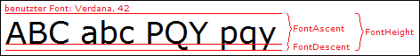

Hilfe
FontHeight


Aufruf
Parameter
Rückgabewert
Beschreibung
Zusatzinformation
Anmerkung: Der äußerst linke Punkt der oberen, roten Linie symbolisiert die Koordinate, die man Text übergibt. Die mittlere Linie wird Grundlinie (engl: baseline) genannt.
übergibt. Die mittlere Linie wird Grundlinie (engl: baseline) genannt.
Beispiel
Siehe auch
höhe = FontHeight()
Parameter
-
Rückgabewert
Maximale Höhe der aktuellen Schrift in Pixel.
Beschreibung
Diese Funktion ermittelt die maximale Höhe einer Schrift in Pixel. Dabei wird immer die aktuell gesetzte Schrift berücksichtigt, die mit LoadFont geladen und mit SetFont gesetzt wurde.
Diese Funktion ist für Berechnungen gedacht, um einen Text genau zu platzieren bzw. um einen Text über dem Bildschirm zu bewegen.
Die Funktion StringHeight ermittelt dagegen die tatsächliche Höhe eines Textes.
Bei üblichen Schriftarten wie Arial oder Verdana arbeitet die Funktion zuverlässig. Bei exotischeren Schriftarten kann der Wert aber gerne mal doppelt so groß sein, als die Buchstaben später hoch sind. Somit ist die Benutzung von FontSize in Einzelfällen ratsamer.
in Einzelfällen ratsamer.Zusatzinformation
Diese Grafik verbildlicht die Bedeutung von FontAscent, FontDescent und FontHeight:

Anmerkung: Der äußerst linke Punkt der oberen, roten Linie symbolisiert die Koordinate, die man Text
übergibt. Die mittlere Linie wird Grundlinie (engl: baseline) genannt.
Beispiel
Hier wird eine Schriftart geladen und deren max. Breite/Höhe ausgegeben:
Graphics 640, 480, 32, 2
SetBuffer BackBuffer()
;Schriftart laden und in font speichern
font = LoadFont("Arial",15,1)
;geladene Schriftart "setzen", also für spätere Textausgaben benutzen
SetFont font
While Not KeyHit(1)
Cls
;Größe und Breite der Schriftart ausgeben
Text 10, 10, "FontHeight: " + FontHeight()
Text 10, 30, "FontWidth: " + FontWidth()
Flip
Wend
;Schriftart wieder freigeben
FreeFont font
End
SetBuffer BackBuffer()
;Schriftart laden und in font speichern
font = LoadFont("Arial",15,1)
;geladene Schriftart "setzen", also für spätere Textausgaben benutzen
SetFont font
While Not KeyHit(1)
Cls
;Größe und Breite der Schriftart ausgeben
Text 10, 10, "FontHeight: " + FontHeight()
Text 10, 30, "FontWidth: " + FontWidth()
Flip
Wend
;Schriftart wieder freigeben
FreeFont font
End
Siehe auch
FontAscent, FontDescent, FontWidth, SetFont, StringHeight, StringWidth